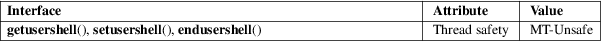

getusershell, setusershell, endusershell − get permitted user shells
Standard C library (libc, −lc)
#include <unistd.h>
char
*getusershell(void);
void setusershell(void);
void endusershell(void);
Feature Test Macro Requirements for glibc (see feature_test_macros(7)):
getusershell(),
setusershell(), endusershell():
Since glibc 2.21:
_DEFAULT_SOURCE
In glibc 2.19 and 2.20:
_DEFAULT_SOURCE || (_XOPEN_SOURCE && _XOPEN_SOURCE
< 500)
Up to and including glibc 2.19:
_BSD_SOURCE || (_XOPEN_SOURCE && _XOPEN_SOURCE <
500)
The getusershell() function returns the next line from the file /etc/shells, opening the file if necessary. The line should contain the pathname of a valid user shell. If /etc/shells does not exist or is unreadable, getusershell() behaves as if /bin/sh and /bin/csh were listed in the file.
The setusershell() function rewinds /etc/shells.
The endusershell() function closes /etc/shells.
The getusershell() function returns NULL on end-of-file.
/etc/shells
For an explanation of the terms used in this section, see attributes(7).

None.
4.3BSD.
shells(5)